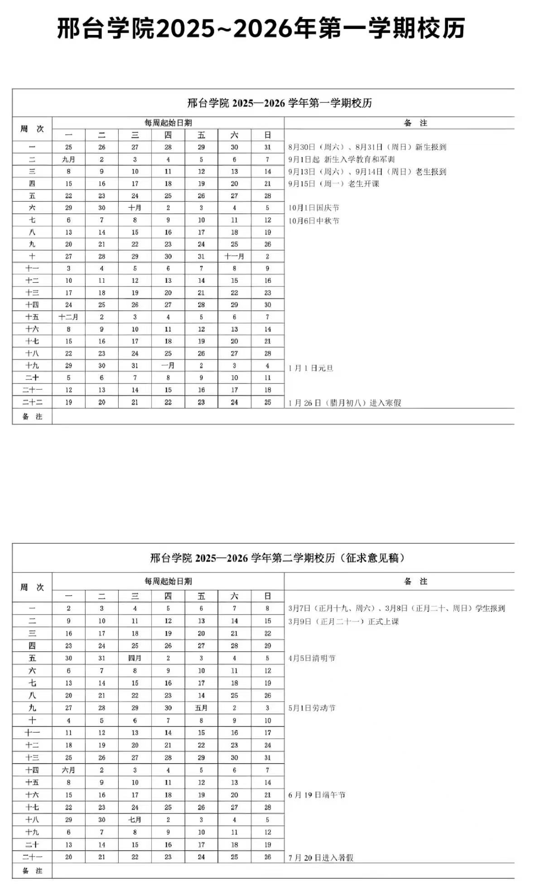

邢台学院 · 新生必备手册
图书馆 · 行政办事 · 校历 · 智慧校园与教务系统
邢台学院图书馆位于校园中部核心区域，是学校的文献信息中心，馆藏资源丰富，是日常自习、查阅资料的主要场所。
借阅区、自习室：工作日 8:00-22:00，周末 9:00-22:00；
电子阅览室、特藏室：工作日 8:00-11:40，14:00-17:30；
节假日、寒暑假会调整开放时间，以图书馆官方通知为准。
馆藏：馆藏纸质图书百万余册，涵盖文、理、工、经、管等各学科，设有专业图书区、文学区、期刊报纸区。
电子资源：购买了中国知网、万方、维普等数据库，校园网内可免费下载文献、论文。
自习服务：馆内设有多个自习室、考研自习区，座位充足；考试季可通过公众号预约座位，规范占座问题。
其他：设有自助借还机、自助打印机、饮水处，定期举办读书讲座、书友活动
校内主要行政部门职能与办事地点如下，工作日上班时间一般为 8:00-11:40，14:00-17:30，节假日休息。
位置：主行政楼内；
职能：学籍管理、选课调课、成绩管理、考试安排、毕业审核、证明打印、四六级报名等。
位置：学生活动中心或行政楼；
职能：奖助学金评定、助学贷款、学生管理、心理咨询、征兵、学生证补办等。
位置：行政楼；
职能：学费住宿费缴纳、发票开具、奖助学金发放、退费办理等。
位置：后勤楼；
职能：宿舍报修、水电服务、食堂管理、校园环境维护、空调租赁。
位置：南门旁保卫楼；
职能：校园安全、门禁管理、户籍迁移、失物招领、案件报警。
考邢台学院近年校历安排，常规学年时间节点如下，每年会结合法定节假日微调，以教务处当年发布的正式校历为准：

功能：统一身份认证，一站式对接教务系统、学工系统、图书馆系统、一卡通、OA 办公、科研系统等所有校内平台，一次登录即可访问全部应用。
入口：学校官网→教务处→高校教学综合管理服务平台
核心功能：选课、退课、课表查询、成绩查询、培养方案查看、考试报名、缓考申请、学籍信息维护，是学业相关的核心系统。
移动端核心工具，对接校内所有系统，核心功能包括：
学业类：查课表、查成绩、考试安排、空教室查询；
生活类：校园卡充值、电费缴费、宿舍报修、图书馆座位预约；
办事类：请假申请、证明开具、奖助学金申请、活动报名。
超星泛雅（学习通）、长江雨课堂、学堂在线等，用于网课学习、课堂签到、作业提交、线上考试。